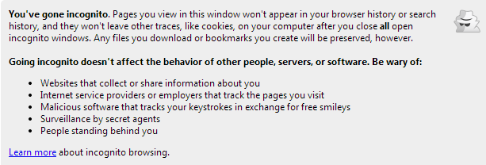
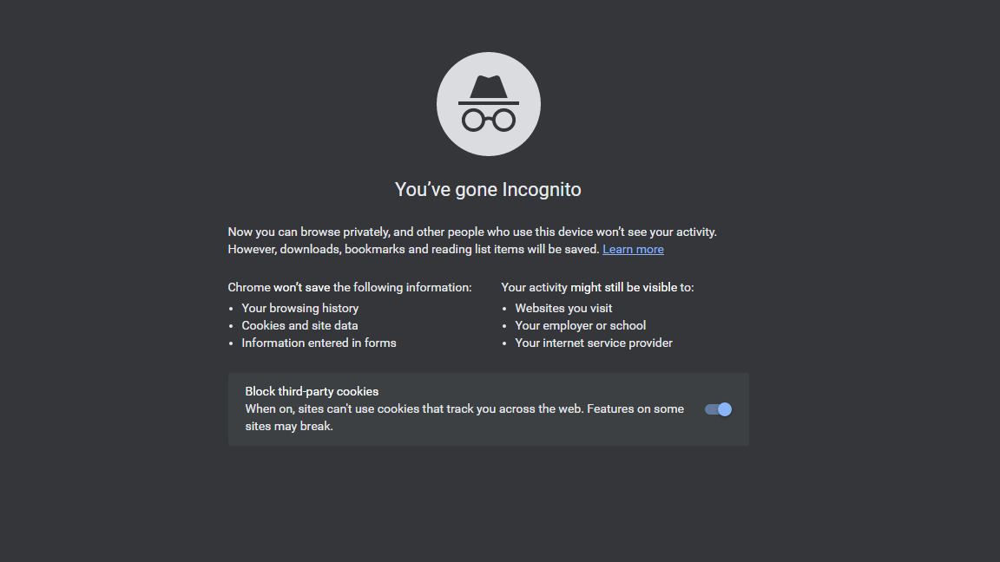
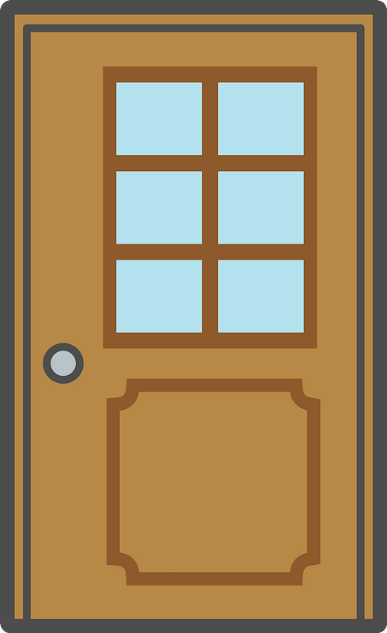

PrivacyPrivacy
PrivacyPrivacyTrackers can obtain private and sensitive information about you, which can then be combined to create a profile and sold to data brokers. Even seemingly harmless or irrelevant information, such as your purchasing history, can be used to make powerful assumptions about you. After receiving your data, data brokers can sell it to advertisers, so they may deliver personalized ads to you, insurance providers, giving them information which could be used to raise your rates, or to ecommerce sites, finding the largest price you would likely pay for a good or service (Avast).
Credit bureaus, a financial form of data brokerage, collect and sell credit history data that plays a significant role in mediating access to finance (Rieke et al. V). However, due to insufficient credit information for credit bureaus to create a report, “almost 20% of Americans face challenges in accessing mainstream credit,” a disproportionate amount of which are Blacks, Hispanics, and lower-income consumers (Rieke et al. 32).
Police in both the United States and Europe purchase personal data from data brokers in order to profile citizens, political parties use the data to target their most receptive audience, and US employers routinely purchase error-prone criminal history reports for job applicants (Rieke et al. V).
Some of the brokerage data available to the police comes from social media. While this data is publicly available to the police, these tools make it easier for police to surveil citizens, at times supplying weak evidence for an arrest. For example, the NYPD have “used potentially innocent actions such as “liking” a photograph on Facebook as the basis for arrest” (Rieke et al. 36).
A large amount of consumer data within the US goes unregulated due to poor legal protection; in the EU, although safeguards exist to protect personal data, including from data brokers and law enforcement, the abstractness of such rules leave them difficult to apply in practical situations (Rieke et al. VI).
The browsers below are sorted in order from best to worst in terms of perceived privacy. My choice for everyday use: Brave
*Hover over an icon to see details about each browser


Installing a new browser is a pretty simple process. You can usually easily find the download button on the browser's website, then, after the file has been downloaded, click it to initiate the installation process (don't worry about allowing the program to make changes to your device). The program will do all the work for you, and, upon opening the browser after it's installed, will usually prompt you for the option to make it your default browser--otherwise, a simple Google search should provide you with the steps to find how to do so in your device's settings. For more information on each browser, you can read these articles: Most Secure Browsers Of 2023 – Forbes Advisor, 11 most secure browsers for private browsing in 2023 - PrivacySavvy
What does private browsing really mean? Its initially intended use was to provide better privacy for those using a shared computer by not saving search/browsing history and erasing cookies from each session. Your activity may still be seen by your Internet service provider, school/employer, the website itself, and sometimes even third parties.
Check out this cheeky warning for incognito browsing from an old version of Chrome:

Strangely enough, Google removed the comment about secret agents in their updated warning:

Although VPNs are typically powerless against browser fingerprinting–unless they explicitly offer protection against that as well–they may still defend against cookies. When navigating a website, your internet service provider (ISP) assigns you a unique IP address, which may then be used to identify you by cookies and your ISP. VPNs make use of remote servers to create a “tunnel” for your internet traffic, making it so the websites you view are hidden from your ISP, and your IP address is hidden by the websites you visit–they instead see the IP address of your VPN server (ExpressVPN). So although your sessions may still be tracked, they cannot be linked to you, making your Internet browsing experience more anonymous.
Here are some well-rated VPNs that each have the standard VPN features:
Here are some great, and free, ad blocking extensions:
Browser extensions are incredibly easy to install, involving only the click of a few buttons. For a more detailed review on each Ad Blocker and others, visit The Best Ad Blockers for 2023 | PCMag or Best ad blockers of 2023 | TechRadar
Search Engine: DuckDuckGo is widely considered to be the best alternative to Google for a search engine that values user privacy. DuckDuckGo famously advertises a zero-tracking policy and automatically routes you to the encrypted version of a website when possible. While it did recently come under fire for a discovered contractual obligation to allow some Microsoft trackers, the company is working on lessening the data Microsoft can collect and is still by far more private than Google.
You may set DuckDuckGo as your default search engine by searching for the option in your browser’s settings or by downloading the browser extension (supported for Chrome, Firefox, Safari, Brave, Edge, and Opera). DuckDuckGo also offers a mobile browser for Apple and Android devices.
There are many different options available for those looking to protect their privacy online, and most of them, including installing a new browser, are relatively easy and quick. However, you should never expect to maintain complete privacy on the Internet because there's always a chance that despite the security measures you take, you will still be identified, perhaps by fingerprinting or perhaps another new method of online tracking. Or, maybe this really all was for nothing, and you'll just get hacked.
Oh no, a hacker has appeared! There isn't really a weapon you can use against him, so choose a door to hide behind!
